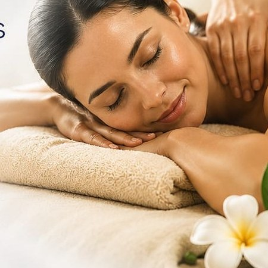

Lymphatic Detox Massage
Detoxify. Rejuvenate. Feel Lighter.
A clinical, specialized drainage manipulation that assists the body's organic metabolic detox pathways using ultra-light, feather-weight rhythmic strokes.
- Reduces cellular fluid stagnation & retention
- Stimulates protective immune responses
- Promotes internal purity & balance
- Leaves you lighter, refreshed & revitalized